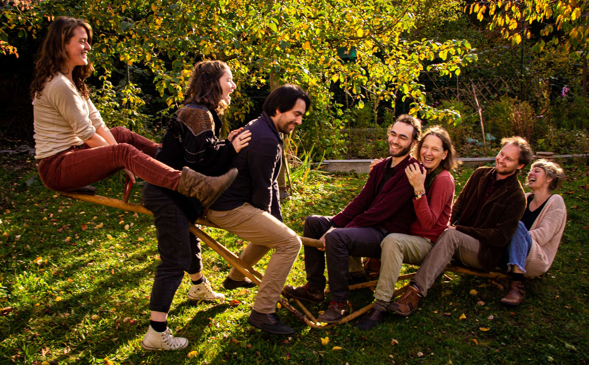

Unser Team
Wir sind eine Initiative von Gestalttherapeut*innen (i.A. oder mit abgeschlossener Ausbildung am GestaltForum Freiburg ) mit verschiedenen Schwerpunkten in unserer Arbeit.
Majke Kunze
Psychologin (M.Sc.), Gestalttherapeutin mit Schwerpunkt
Körperpsychotherapie & kreative Medien, Hypnosystem-Coach,
Traumapädagogin, Systemische Therapeutin i.A.
Mich drängt seit jeher die Frage nach dem „Wahren“: was ist das
eigentlich? Was steckt hinter und in all den Möglichkeiten, die
Welt zu sehen? Wie finde ich meine ganz eigene Wahrheit, meinen
Wesenskern? Meine Vision in diesem Fragen ist es, in ein
sinnhaftes, erfülltes und sprudeliges Leben hinein zu leben. Dabei
ist Gestalt für mich ein wunderbarer Boden, auf dem ich meine
Schritte setzen kann. In jedem gegenwärtigen Augenblick neu.
In meiner Begleitung von Menschen bin ich experimentierfreudig,
nah, achtsam und haltgebend. Ich arbeite gern über und mit dem
Körper, der Stimme und deinen ganz eigenen inneren Bildern.
Patricia Kleber
Sozialpädagogin (M.A.), Gestalttherapeutin, Heldenreiseleiterin,
Natur- und Erlebnispädagogin
Seit ich die Gestalttherapie für mich entdeckt habe, lebe ich eine
neue Form der Begegnung mit mir selbst und anderen, die immer mehr
Tiefgang, Nähe und Wahrhaftigkeit in mein Leben einlädt. Den
kraftvollsten Moment der Gestalttherapie stellt für mich die
Entscheidung dar, wirkliche Verantwortung für das Fühlen und
Handeln zu übernehmen und dies in den ehrlichen Austausch mit den
Mitmenschen zu bringen. Für diese Haltung gehe ich und investiere
neben meiner Tätigkeit als Sozialpädagogin meine Zeit und Lust
dafür, sie in die Welt weiter zu tragen.
Die Ausbildung zur Heldenreiseleiterin ergänzt meinen
liebevoll konfrontativen Begleitungsstil durch die Fähigkeit,
Menschen in besonders intensiven und ausdrucksstarken Prozessen im
geschützten Rahmen zu begleiten.
Melina Weiner
Ich bin glückliche Beschreiterin alternativer Bildungswege, Reisende und Suchende nach sinnstiftendem Sein in dieser Welt. Durch meine Wildnispädagogikausbildung forsche und lebe ich mit der Weisheit der Natur und arbeite mit dem Kontakt zur Erde und zyklischem Leben. Tanz und Körperarbeit sind wichtige Bestandteile meines Lebens, sie vertiefen und prägen mein in Beziehung Gehen zu meinen Mitmenschen. Ich bin Gestalttherapeutin, wobei ein besonderer Fokus hier für mich die Leitung von gruppentherapeutischen Settings ist. Ein weiteres Lern- und Forschungsfeld ist die Prozessbegleitung zur Projektumsetzung für Gemeinschaften und Teams mit der Methode Dragon Dreaming.
Edgar Reinhold
Sozialpädagoge (B.A.), Gestalttherapeut, Natur- und
Erlebnispädagoge, Biologe
Mich fasziniert an der Gestaltarbeit, wie sie mich so radikal in
den Moment holt und mich immer wieder einlädt, wirklich mit dem zu
sein, was gerade ist. Dieses Annehmen macht mich innerlich frei
und ermöglicht Veränderung. Es macht mir große Freude, Menschen
dabei zu begleiten, diese Freiheit für sich zu entdecken. Mit dem
zu sein, was ist, bedeutet für mich auch, genau das in den Kontakt
mit anderen zu bringen, schonungslos ehrlich zu sein und so
wirklich authentische, lebendige und konstruktive Begegnungen zu
ermöglichen. Danach versuche ich zu leben, sowohl im Privaten als
auch in der therapeutischen Arbeit. In diese lasse ich auch gerne
meinen Humor mit einfließen. Erfahrungsgemäß kann ein
augenzwinkernder Blick auf die ganz schweren Themen die
Auseinandersetzung erleichtern.
Agnes Knoop
Dipl. Sängerin und Gesangspädagogin, Gestalttherapeutin,
Intuitionspraktikerin, Seelenstimm-Forscherin
Mich führt eine Sehnsucht nach tiefer Menschlichkeit, Achtsamkeit,
Respekt und authentischem Sein. Meiner inneren Stimme zu folgen
und zu vertrauen und Menschen darin zu begleiten, ist eins meiner
Herzensanliegen hier auf der Erde. Ich schöpfe aus der Erfahrung,
mich im Annehmen von Enge zu unterstützen und meinen eigenen Raum
immer wieder zu entfalten und auszudehnen. Mehrjähriges Sein an
der „Akademie der Intuition“ schulte mein intuitives Gewahrsein.
Durch meine Arbeit als klassische Sängerin und Gesangspädagogin
habe ich viel Erfahrung mit Körper-, Stimm-, und Bühnenarbeit
gesammelt.
An der Gestaltarbeit begeistert mich das „in Beziehung Sein“ zu
dem, was gerade ist. Zu mir, zu meiner Wahrheit, zu anderen
Menschen, zur Welt.
Ich arbeite im Kontakt mit Mutter Erde, verbunden mit dem Herzen,
fein, achtsam und warm. Dazu nutze ich meine feinen, intuitiven
Zugänge und die kreativen Ausdrucksweisen von Körper und Stimme.
Weichheit und Tiefe sind meiner Arbeit eigen.
Martin Pellmann
Heilpraktiker für Psychotherapie, Gestalttherapeut, Pessotherapeut
(i.A)
Gestalt ist für mich eine Art in der Welt zu
sein: achtsam, abenteuerlich, immer wieder frisch, aufregend. Sie
bietet mir einen Raum zum Vertrauen und Hingeben. In der
therapeutischen Begleitung ist mir wichtig, gemeinsam zu schauen,
was für dich gerade wirklich wesentlich ist und dir dabei zu
ermöglichen, in deinem eigenen Tempo zu bleiben.
Irene Killian
HPPsych, Gestalt- und Releasing-Therapeutin, NARM-Therapeutin
(i.A.), Cellolehrerin und Mutter von 6 erwachsenen Kindern
Gestalt hat mich berührbarer und lebendiger gemacht. Seit ich
lerne, limitierende Glaubenssätze über Bord zu werfen, ist mein
Leben viel farbiger geworden. Besonders genieße ich, dass der
bessere Kontakt zu meinem Innern auch meine Kontakte nach außen
intensiver und herzlicher macht. Ich liebe diesen Raum, der
radikale Ehrlichkeit anregt auf dem Weg, den Kampf gegen sich
aufzugeben und tief und wertfrei anzunehmen, was da ist. Gerne
begleite ich Menschen dabei, in Kontakt mit ihren ureigenen
Impulsen und Bedürfnissen zu kommen und stehe ihnen auf dem Weg
zu Selbstliebe und Selbstermächtigung als „Hebamme“ beiseite. Dazu
biete ich mit viel Ruhe, großem Vertrauen und Achtung vor den
individuellen Heilungswegen mein warmes Gewahrsein an. Manchmal
lockt es mich aber auch, ein wenig zu kitzeln und spielerisch an
die Themen heran zu gehen!
Manuel Tumino
Gestaltarbeit, Körperarbeit, Rebalancing, Jungen*arbeit,
Fachbereich sexualisierte Gewalt, Council, MBSR,
Kinderschutzfachkraft, RestorativeJustice
Mitmensch zu sein bedeutet Mit Mensch zu sein
mal klein und fein, mal grob wie ein Stein,
im gemeinsamen
Hain scheint das wahre Sein.
Wir freuen uns, dich kennen zu lernen – in all deinen Facetten!